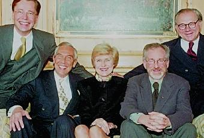

Breite Unterstützung für die Shoah-Stiftung
Initiative „Partners in Tolerance" fördert das Projekt von US-Regisseur Spielberg mit 2,6 Millionen Mark

Steven Spielberg mit den Gründern von "Partners in Tolerance": Thomas Middelhoff, August A. Fischer, Friede Springer, Hubert Burda
Berlin Die Medienunternehmen Axel Springer Verlag, Bertelsmann AG und der Burda Verlag haben eine erfolgreiche Bilanz ihres Engagements als „Partners in Tolerance" gezogen. Die Initiative, die sich im vergangenen Dezember zusammenschloß, unterstützt die Shoah-Stiftung des US-Regisseurs Steven Spielberg.
Gus Fischer, Vorstandsvorsitzender des Axel Springer Verlags, sagte: „Bisher sind durch das Engagement der Verleger, weiterer Unternehmen und auch zahlreicher Privatpersonen rund 2,6 Millionen Mark für die Aktion ,Partners in Tolerance' zusammengekommen."
Die Shoah Foundation dokumentiert seit Jahren die Erinnerungen von Überlebenden des Holocaust. Diese Interviews werden derzeit digitalisiert und katalogisiert. Anschließend sollen sie in einem Archiv der Öffentlichkeit zugänglich gemacht werden. Eine englischsprachige CD-Rom existiert bereits. Bisher sind mehr als 50 000 Interviews in 32 Sprachen und in 52 Ländern geführt woren.
„Wie wir stellen sich unsere Verlegerkollegen mit ihrer Teilnahme an der Förderung der Shoah Foundation ihrer Verantwortung zur Information und Dokumentation des Holocaust. Dies ist ein wichtiger Beitrag zum Nicht-Vergessen, ohne das Normalität zwischen Juden und Deutschen keine Chance hat", sagte Fischer. Der Verleger Hubert Burda erklärte: „In diesem Land wächst nach all dem Schrecklichen eine Generation heran, die alles tun wird, daß die Idee der ,Partners in Tolerance' in die Zukunft weist. Binnen eines Jahres solle eine deutsche Version der CD-Rom an Schulen eingesetzt werden.
Thomas Middelhoff, Vorstandsvorsitzender der Bertelsmann AG, sagte, Medienunternehmen hätten eine besondere Verantwortung, ein solches Projekt zu unterstützen. Middelhoff kritisierte außerdem die Debatte um das geplante Holocaust-Mahnmal. Das ethische Ziel werde von dem Streit verdeckt. „Wir sollten schnell zu einer Entscheidung kommen." Die Politik müsse sich endlich äußern. Auch Fischer mahnte eine zügige Entscheidung an.
Spielberg sagte dazu, er wolle sich nicht einmischen. „Das ist eine Entscheidung, die die Deutschen treffen müssen." Die Foundation stehe im Hintergrund bereit, wenn eine Entscheidung falle. „In jedem Fall soll das Archiv nach Berlin." Die Idee für die Stiftung entstand während Spielbergs Dreharbeiten für den Film „Schindlers Liste". „In den Drehpausen wurde ich immer wieder von Überlebenden des Holocaust angesprochen. Sie wollten mir ihre ganze Geschichte erzählen", sagte Spielberg. „Diese Gespräche haben mich dann zu meinem Shoah-Projekt inspiriert." IG/gras
© DIE WELT, 11.2.1999